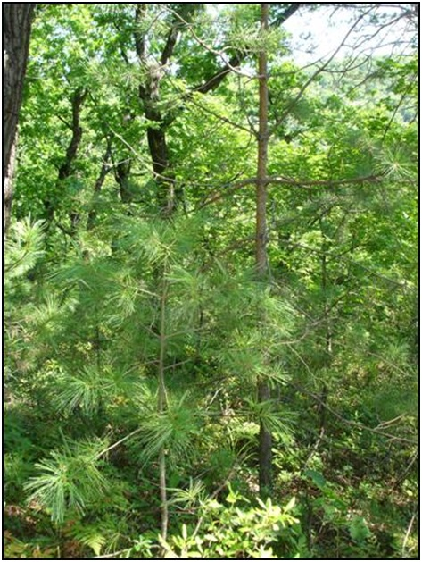
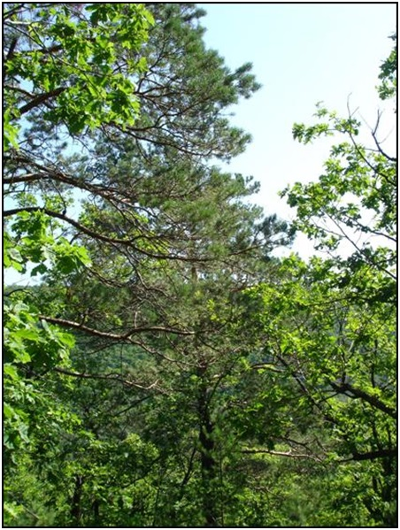

10. Памятник природы «Сосняки на Бревенчатой»
Ботанический памятник природы регионального значения "Сосняки на Бревенчатой" - это уникальная природная система, находящаяся под охраной государства.
Неподалеку протекает река Бревенчатая – приток реки Амур. В ее долине произрастают естественные лесные насаждения сосны обыкновенной. Они расположены отдельными небольшими рощицами на склонах сопок. Именно эти насаждения и являются основным объектом охраны ботанического памятника природы "Сосняки на Бревенчатой".
Эти заросли сосны обыкновенной представляют собой изолированные насаждения сосны, появившиеся здесь естественным путем. Они образуют юго-восточную границу огромного евроазиатского ареала, в рамках которого можно встретить данный вид.


